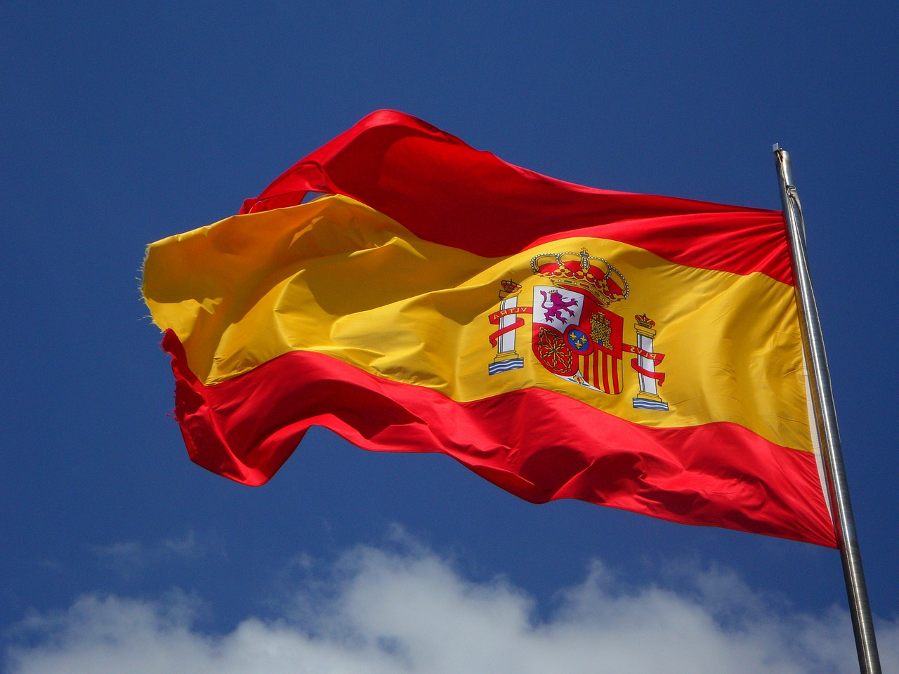

Topp 5 Resedestinationer I Europa
Det må vara den näst minsta världsdelen, men detta hindrar inte Europa från att vara lika spännande som alla andra. En gång i tiden var detta världens maktcentrum, där otaligt många imperier grundats och fallit och föll med tiden. Idag präglas Europa av fred och samarbete, men minnen om dess stormakter och krig kvarstår. För den som vill uppleva intressant historia, rik kultur och fantastisk natur är detta den perfekta destinationen. Europa har mycket att se på en sån liten yta, jag har samlat in mina favoritländer i denna topplista så att även du kan ta vara av mina rekommendationer när du planerar din egen europaresa.
5. Tyskland
Centralt i Europa ligger ett land med stora skogar, historiska städer och sagolika slott. Mycket av det vi tänker oss i vår stereotypiska bild av Europa finns i Tyskland att se och uppleva.
Den som söker kultur kommer hitta det i dess många storstäder som Berlin, Hamburg och München, medan den som vill se spännande natur hittar det i Rhendalen och Schwarzwald. Dock vart du än väljer att gå så kommer du alltid mötas av god mat, trevligt folk och Europas kanske bästa öl. Alla dessa saker gör Tyskland till en självklar destination att ha med i listan, och kommer ge alla sina besökare oförglömliga minnen.
Ställen att besöka:
- Berlin, Tysklands huvudstad, är en av Europas viktigaste städer. Här finns både gammalt och nytt, där kyrkor och katedral smälter in i storstaden.
- Rhendalen, ett av Tysklands många officiella världsarv. Dess unika förhållanden har lett till ett unikt mikroklimat med arter som skiljer sig från resten av landet.
- Hamburg, ett av Europas viktigaste hamnstäder. Här kan du ta en pittoresk promenad runt de fina kvarteren nära Elbe floden, eller kolla in rebelliska St. Pauli.
4. Schweiz

Inklämd mellan Frankrike, Italien, Österrike, Tyskland och lilla Liechtenstein ligger Schweiz. Detta land har varit neutralt under längst tid, och har i flera århundraden hållit sig undan från Europas blodigaste konflikter. Men detta hemlighetsfulla ställe har många överraskningar för den som kan stå för de dyra kostnaderna som kommer med besöket.
Det må vara ett av Europas mindre länder, men här finns det mycket att se. Schweiz ligger nämligen mitt i alperna, och har tillgång till några av Europas högsta och mest kända berg. Dessa kontras av vackra gröna dalar och mysiga små byar som ger en riktigt magisk upplevelse.
Ställen att besöka:
- Zürich, dess strax över 420 tusen invånare gör detta till landets största stad. Trots det lyckas denna charmiga stad behålla en bykänsla, med sitt välbevarade gamla kvarter och närhet till Zürichfloden.
- Geneve, nära den franska gränsen ligger denna stad med en ganska viktig historisk betydelse. Här låg FN:s högkvarter under många år och flera internationella organisationer som Röda Korset grundades här. Utöver detta finns en massa sevärdheter som kan ses här.
- Grindelwald, en av många skidorter i Schweiz, ligger nära flera av alpernas mest imponerande berg. Även den som inte är särskilt förtjust i skidåkning kan njuta av de fantastiska utsikter som detta idylliska område erbjuder.
3. Spanien
Ett land som ligger mig varmt om hjärtat. Hit har jag åkt varje år och jag kommer utan tvekan fortsätta göra så (såvida inte en global pandemi stänger in mig).
Spaniens turistindustri är imponerande, och många besöker detta land på den iberiska halvön för att njuta av solen och slappna av i dess många badorter, vilket i sig inte är en dålig resa. Men jag vill påstå att Spanien har mer att se än dess stränder och resorthotell. Nedan rekommenderar jag några sevärdheter och upplevelser som inte är lika vanliga bland de som besöker Spanien:
- Alhambra, i Granada ligger denna unika borg starkt inspirerad av islamisk arkitektur. Detta var den sista moriska fästningen som återtogs av spanjorerna i ”La Reconquista”. Den har förblivit oförändrad under lång tid och är enligt mig en av Spaniens allra häftigaste världsarv.
- Stanna i en Parador. Parador-hotell är ett statligt ägt nätverk bestående av 96 hotell. Dessa är oftast gamla slott eller palats som renoverades för att sedan öppnas som hotell. Att stanna i en parador ger dig möjligheten att uppleva en sida av Spanien som inte ses så ofta av utländska turister, samtidigt som du tar vara av de fantastiska kulturella aktiviteterna som hänger med..
- Den gamla staden Ávila strax utanför Madrid är ytterligare ett av Spaniens världsarv. Det är känt för sin välbevarade 2500 meter långa ringmur som omringar staden samt dess många romanska och gotiska kyrkor.


2. Frankrike
Frankrike har varit ett av Europas mest inflytelserika länder i allt från politisk till kulturell makt. Även idag är det en betydelsefull nation i sin världsdel, och har mycket att se och göra.
Frankrike är världskänt för sin ledande roll i gourmetmat, mode, kultur och ett oerhört romantiskt språk. Besöker du detta land så kommer du få uppleva allt detta och mycket mer i förstahand, och du kommer få ta del av upplevelser som kommer få dig att säga ”Oh la la”.
Ställen att besöka:
- Paris, Frankrikes (och kanske till och med Europas) huvudstad. Dess sevärdheter är så välkända att jag egentligen inte behöver nämna dem, det är helt enkelt alla städers förebild. Eiffeltornet, Louvren, Notre Dame, alla dessa världsberömda platser ger Paris en status som ingen annan stad kan konkurrera med.
- Nice, för den som vill ha en trevlig kuststad i franska Rivieran. Sol och palmträd klär denna trevliga stad, perfekt för den som vill ha en mer lokal och varm upplevelse. Dessutom ligger Nice nära Monaco, med sitt kända Monte-Carlo Casino.
- Mont Saint-Michel, världens säkerligen mest unika kloster. Den ligger på en ö strax utanför Normandies kust, vars bro kan hamna under vatten beroende på tidvattnet. Detta gör Mont Saint-Michel till ett av världens mest unika världsarv, och är sannerligen värt att se.
Hedersomnämnande: Island
Ön Island ligger en bra bit från det europeiska fastlandet, men den brukar allmänt räknas till Europa ändå. Det lär vara ett av världens mest unika länder, med en natur som inte går att hitta någon annanstans.
Att vara i Island kan kännas som att vara i en annan planet. Med sina svarta stränder, heta gejsrar och vulkaner som då och då kan få utbrott så erbjuder denna ö en riktigt häftig natur att utforska.
Ställen att besöka:
- Reykjavik, världens nordligaste huvudstad. Denna mysiga stad på strax över 100 tusen invånare har sina sevärdheter, som perlanmuseet och Hallgrímskirkja.
- Gyllene Cirkeln, en 30 mil lång slinga som tar dig till Island vackraste natur. Du får se stora gejsrar, mäktiga vattenfall och oförglömliga utsikter över den isländska naturen.
- Bada i Islands varma källor. Vattnet från Islands många gejsrar sägs vara fyllt med massor av nyttiga mineraler, så passa på och ta hand om dig själv i ett av Islands många geotermiska span.


1. Italien
Mamma Mia, vilket land! Behöver man verkligen en introduktion till detta otroliga land, som genomgått en sån häpnadsväckande historia och utvecklat en otrolig kultur och bland den bästa maten i världen. Italiens förstaplats bör inte ses som en överraskning för någon med dessa faktorer i åtanke.
Det skoformade landet som sträcker sig djupt ner i medelhavet har så mycket att se och göra i alla aspekter, men vad du än väljer att göra i Italien så kommer det garanterat att stanna i ditt minne för evigt.
Ställen att besöka:
- Rom, Italiens huvudstad. Man brukar säga att alla vägar bär till Rom, vilket har sin grund i att detta en gång i tiden var centrum för världens mäktigaste imperium. Arvet från de tiderna kvarstår, med ruiner som påminner om romarrikets storhet.
- Cinque Terre, en mysig kuststräcka med färgglada italienska fiskebyar. Den som vill ha upplevelsen av lokallivet i Italien kommer älska det här stället.
- Venedig, kanalernas härskare. Många städer har försökt att lägga in kanaler i sin stil, men ingen gör det så bra som Venedig. Det finns inte mycket som är mer romantiskt än att ta en båttur runt dess kanaler och njuta av den omringande klassiska arkitekturen.


Håller du med min lista? Vilka är dina favoritdestinationer i Europa?Kontakta mig gärna med dina förslag och synpunkter!